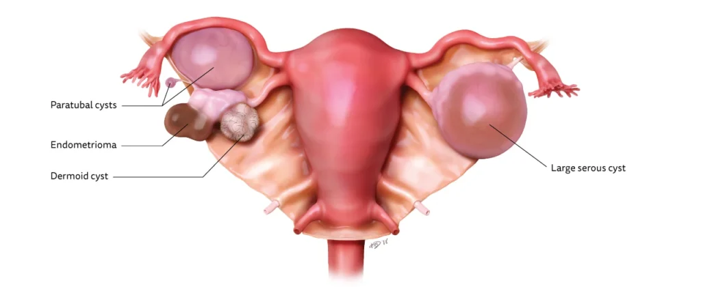
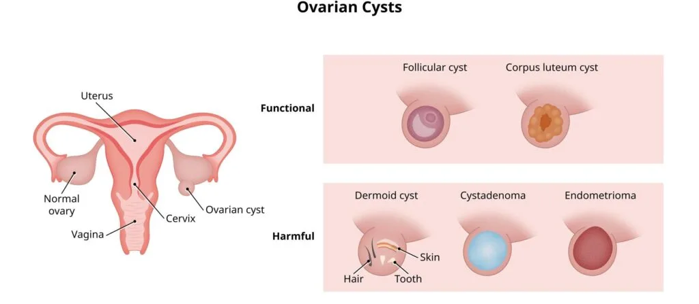
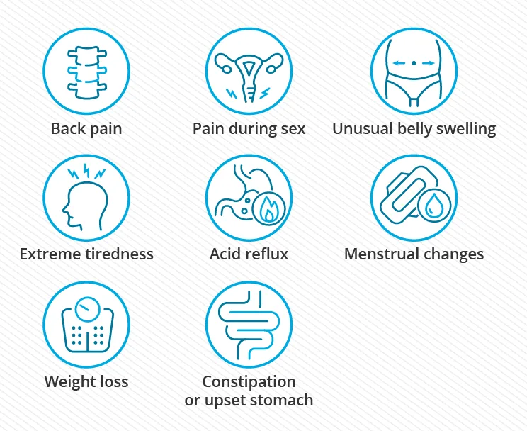
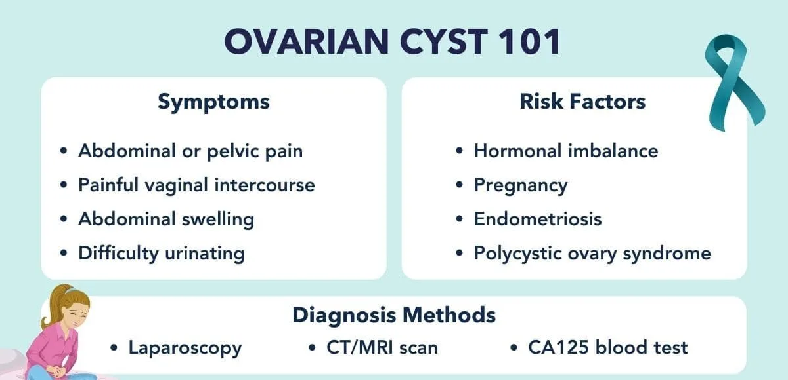

Expanded Nursing Uganda Explanation
Ovarian cyst. should be understood beyond a short definition. Link the concept to patient history, focused assessment, common risks, nursing priorities, documentation and evaluation of outcomes.
01 Ovarian Cysts
An ovarian cyst is a semi-solid or fluid-filled sac within the ovary .
Many women will have them at some point during their lives. Most ovarian cysts present little or no discomfort and are harmless. The majority disappear without treatment within a few months.
02 Aetiology of Ovarian Cysts
Most ovarian cysts occur as part of the normal workings of the ovaries. These cysts are generally harmless and disappear without treatment in a few months. Cysts are caused by abnormal cell growth and aren’t related to the menstrual cycle. They can develop before and after the menopause. Conditions that cause Ovarian Cysts include;
1. Hormonal Imbalances:
- Polycystic Ovarian Syndrome (PCOS): A hormonal disorder that causes multiple cysts to form on the ovaries. It is the most common cause of ovarian cysts.
- Endometriosis : A condition where uterine tissue grows outside the uterus, including on the ovaries, which can lead to cyst formation.
- Premature Ovarian Failure (POF) : Occurs when the ovaries stop working before age 40, leading to hormonal imbalances and cyst formation.
Risks Factors include;
1. Medications :
- Fertility drugs : Can increase the risk of cyst formation.
- Certain medications: Some medications, like birth control pills, can also cause cyst formation.
2. Genetics :
- Family history of PCOS : A family history of PCOS increases the risk of developing the condition and associated cysts.
03 Types of Ovarian Cysts :
Functional Cysts/Physiological Cysts
Cysts that develop as part of the menstrual cycle and are usually harmless and short-lived; these are the most common type of ovarian cyst.
- Follicular Cyst: Forms when the follicle doesn’t rupture or release its egg but continues to grow.
- Corpus Luteum Cyst(Luteal Cysts) : Forms if the follicle releases the egg but then closes up and fluid accumulates inside.
Cysts that occur due to abnormal cell growth; these are much less common
- Dermoid Cysts(Teratomas): Contain tissue such as hair, skin, or teeth because they form from cells that produce human eggs.
- Cystadenomas: Develop from ovarian tissue and may be filled with a watery or mucous substance.
- Endometriomas(chocolate cysts) : Result from endometriosis, where uterine endometrial cells grow outside the uterus.
04 Signs and Symptoms of Ovarian Cysts:
- Often asymptomatic
- Pelvic pain or discomfort : Ovarian cysts can cause pelvic pain (sharp or dull) or pressure in the pelvic area.
- Bloating or abdominal swelling : Some women may experience bloating or a feeling of fullness in the abdomen.
- Irregular menstrual cycles: Ovarian cysts can disrupt the normal menstrual cycle, leading to irregular periods.
- Pain during intercourse : Cysts may cause pain or discomfort during sexual intercourse.
- Changes in urinary patterns : Ovarian cysts can put pressure on the bladder, leading to increased frequency or urgency of urination.
- Digestive issues: Large cysts may cause digestive symptoms such as nausea, vomiting, or changes in bowel movements.
- Painful bowel movements: Cysts can put pressure on the rectum, causing pain or discomfort during bowel movements.
- Fatigue or low energy: Some women with ovarian cysts may experience fatigue or a general feeling of low energy.
- Breast tenderness: Ovarian cysts can sometimes cause breast tenderness or changes in breast size.
- Sudden, severe abdominal or pelvic pain: A ruptured ovarian cyst can cause intense pain in the lower belly or back.
- Vaginal spotting or bleeding : After a cyst ruptures, some women may experience vaginal spotting or bleeding.
- Abdominal bloating: Bloating or a feeling of fullness in the abdomen may occur after a cyst ruptures.
- Severe nausea and vomiting : In some cases, a ruptured cyst may cause severe nausea and vomiting.
- Faintness or dizziness : Feeling lightheaded, faint, or dizzy can be a symptom of a ruptured ovarian cyst.
05 Diagnosis of Ovarian Cysts:
Medical History and Physical Examination:
- History of signs and symptoms, medical history, and any risk factors associated with ovarian cysts.
- A pelvic examination may be performed to check for any abnormalities or signs of a cyst.
- Pregnancy test : A positive pregnancy test result may suggest the patient has a corpus luteum cyst.
Imaging Tests:
- Pelvic Ultrasound : This is the most commonly used imaging test for diagnosing ovarian cysts. It can provide detailed images of the ovaries and help determine the size, location, and characteristics of the cyst.
- Transvaginal Ultrasound: In some cases, a transvaginal ultrasound may be performed, where a small probe is inserted into the vagina to obtain clearer images of the ovaries.
Blood Tests:
- CA-125 Test: This blood test measures the level of a protein called CA-125, which can be elevated in certain cases of ovarian cysts, including those that are cancerous.
- Hormone Level Tests : Blood tests may be done to check hormone levels, such as estrogen and progesterone, which can help determine the type of cyst.
Laparoscopy:
- In some cases, a laparoscopy may be recommended. It is a surgical procedure where a small incision is made in the abdomen, and a thin tube with a camera is inserted to visualize the ovaries and confirm the presence of a cyst.
Biopsy :
- If there is a suspicion of ovarian cancer, a biopsy may be performed to obtain a tissue sample for further analysis.
06 Management of Ovarian Cysts:
Management of ovarian cysts depends on various factors such as the type of cyst, its size, symptoms, and the individual’s medical history.
1. Watchful Waiting : In many cases, ovarian cysts resolve on their own without treatment. This approach involves monitoring the cyst through regular check-ups, such as ultrasound scans, to ensure it is not growing or causing any complications.
2. Medications : Hormonal birth control pills may be prescribed to regulate the menstrual cycle and prevent the formation of new cysts. These medications can also help shrink existing functional cysts. They work by suppressing ovulation and reducing the production of ovarian cysts.
- Nonsteroidal Anti-inflammatory Drugs (NSAIDs) : NSAIDs such as naproxen, acetaminophen, and ibuprofen can help alleviate pain associated with ovarian cysts.
3. Surgical Intervention : Surgery may be recommended in the following situations:
- Large or persistent cysts causing symptoms : If the cyst is causing pain, discomfort, or affecting daily activities, surgical removal may be necessary.
- S uspicion of malignancy : If there are concerns that the cyst could be cancerous or has the potential to become cancerous, surgery may be performed to remove the cyst and assess its nature.
- Complications : If the cyst causes ovarian torsion (twisting) or rupture, emergency surgery may be required.
4. There are two main surgical approaches:
- Laparoscopy : This minimally invasive procedure involves making small incisions in the abdomen and using a laparoscope to remove or drain the cyst. It offers quicker recovery time and less postoperative pain.
- Laparotomy : In cases of larger cysts or suspected malignancy, a larger incision is made in the abdomen to remove the cyst. This approach may require a longer hospital stay and recovery period.
5. Fertility Preservation : If fertility is a concern, aim to preserve the reproductive organs as much as possible. In some cases, only the cyst is removed, leaving the ovaries intact. However, in certain situations, both ovaries may need to be removed, which can lead to early menopause. In such cases, assisted reproductive techniques may be considered.
07 Preventive Measures for Ovarian Cysts:
- Regular pelvic exams: Getting regular pelvic exams can help detect ovarian cysts early and monitor their growth. This allows for timely intervention if necessary.
- Hormonal birth control : Taking hormonal birth control, such as birth control pills, can help regulate the menstrual cycle and prevent the formation of ovarian cysts.
- Maintain a healthy weight : Obesity and excess weight can increase the risk of developing ovarian cysts. Maintaining a healthy weight through a balanced diet and regular exercise may help prevent cyst formation.
- Manage hormone levels: Conditions such as polycystic ovary syndrome (PCOS) can increase the risk of ovarian cysts. Managing hormone levels through medication or lifestyle changes can help prevent cyst development.
- Avoid smoking : Smoking has been linked to an increased risk of ovarian cysts. Quitting smoking or avoiding exposure to secondhand smoke can help reduce the risk.
- Treat underlying conditions: Treating conditions such as endometriosis or hormonal imbalances can help prevent the development of ovarian cysts.
- Avoid unnecessary hormone therapy: Certain hormone therapies, such as fertility treatments, can increase the risk of ovarian cysts. Discuss the potential risks with your healthcare provider before starting any hormone therapy.
- Regular exercise : Engaging in regular physical activity can help regulate hormone levels and promote overall reproductive health, reducing the risk of ovarian cysts.
08 Complications of Ovarian Cysts:
- Twisting of the cyst (ovarian torsion) : In some cases, a large cyst can cause the ovary to twist or move from its original position, cutting off the blood supply to the ovary. This can lead to severe pain and may require immediate medical attention.
- Rupture of the cyst : Ovarian cysts can rupture, causing sudden and severe pain. This can lead to internal bleeding and increase the risk of infection.
- Infection is likely to occur during puerperium if woman has been pregnant the cyst may become malignant
- Hemorrhage as a result of rupture of the cyst’s blood vessels on it.
- Intestinal obstruction as a result of adherence of the intestines on the cysts especially the malignant one.
- Abortion , Malpresentations and Obstructed labor.
09 Nursing Uganda Clinical Lens
Use Ovarian cyst. as a practical nursing topic, not only a memorized definition. Start with normal structure and function, then connect it to assessment findings and disease.
- What to understand first: define ovarian cyst., identify the normal or expected pattern, then explain what changes when the patient is unwell.
- Why it matters in care: the nurse must recognize risk early, explain findings clearly, document accurately and know when to escalate.
- How to revise it: connect each point to assessment, nursing diagnosis or care problem, intervention, rationale and evaluation.
10 Assessment Guide
- Relevant inspection, palpation, movement, auscultation, vital signs or neurological checks.
- Normal findings, abnormal findings and what each abnormality may indicate.
- Patient history, risk factors and how the body system affects other systems.
11 Nursing Priorities, Rationales and Outcomes
- Use anatomy to explain symptoms and guide focused assessment.
- Recognize findings that need urgent escalation.
- Teach the patient using simple body-system language.
The rationale for these priorities is patient safety: nursing actions should prevent deterioration, reduce discomfort, support recovery and create clear evidence for the next caregiver.
- Expected outcome: The learner can explain normal function, identify abnormal signs and connect them to nursing action.
12 Patient Teaching and Revision Check
- Explain ovarian cyst. in simple language the patient or caregiver can repeat back.
- Teach warning signs, medicine or follow-up instructions, hygiene or lifestyle points where relevant.
- For exams, prepare a short answer using: definition, causes or risk factors, signs, assessment, management, complications and prevention.
- For ward practice, document baseline findings, actions taken, patient response and the plan for review.
Illustrations and Diagrams (6)






Related Video Lectures
Watch nursing lecture videos on YouTube for this topic. Opens in a new tab.
Watch on YouTubeExternal link: YouTube may use its own cookies and terms. Nursing Uganda is not affiliated with YouTube.